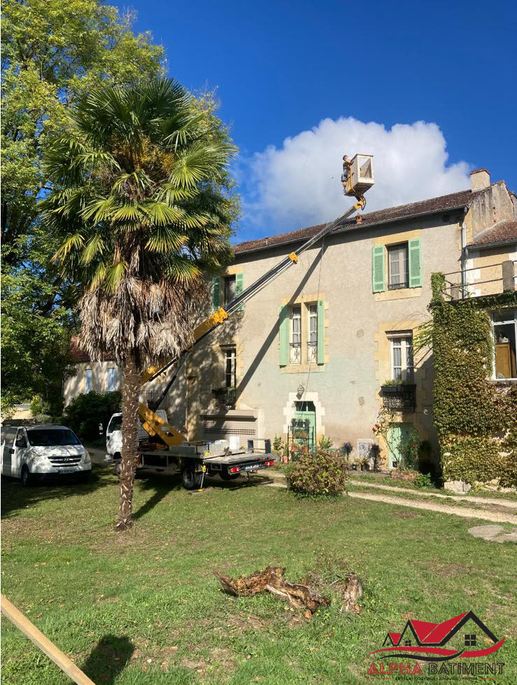
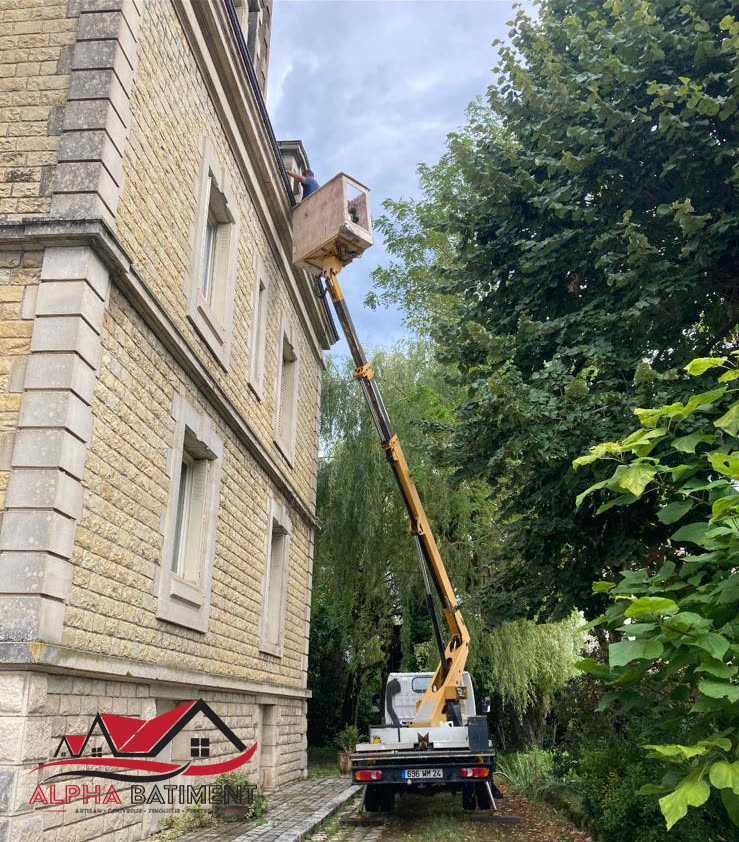
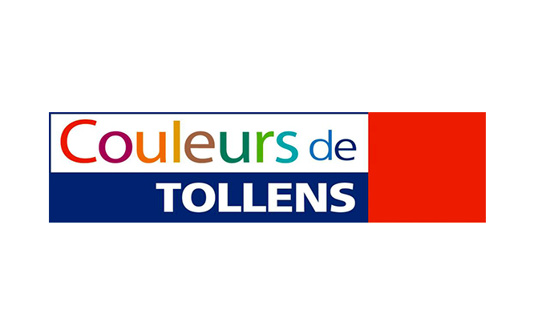
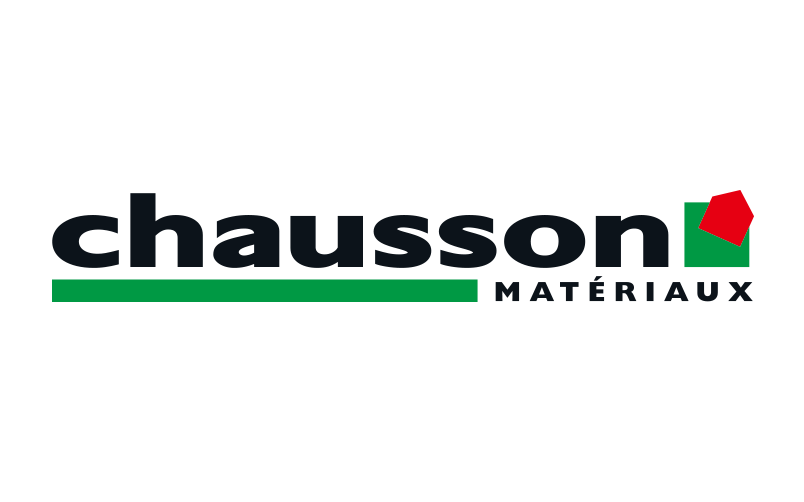
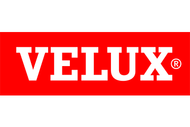
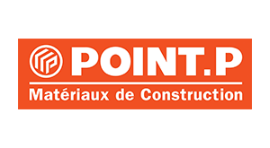

Couvreur, zingueur en Dordogne.
Alpha Bâtiment intervient à Pazayac et dans les environs de Brive-la-Gaillarde pour vos travaux de couverture, zinguerie, isolation et façades — avec un camion nacelle qui nous permet de travailler en hauteur sans échafaudage.
Nos prestations
Du dépannage d'urgence à la rénovation complète, sept métiers du bâtiment sous un même toit.
Urgence fuite de toiture
Une infiltration, une tuile envolée après la tempête ? Nous intervenons pour bâcher, diagnostiquer et réparer.
Appeler maintenantTravaux de couverture
Réfection, rénovation et création de toitures, tuiles comme ardoises.
DécouvrirZinguerie
Gouttières, chéneaux, solins et habillages métalliques posés avec précision.
DécouvrirEntretien de toiture
Nettoyage et contrôle pour repérer les faiblesses avant qu'elles ne deviennent des fuites.
DécouvrirIsolation
Isolation des combles et rampants, souvent lors d'une réfection de toiture.
DécouvrirFaçades
Ravalement et traitement de l'humidité, y compris sur les points hauts grâce à la nacelle.
DécouvrirFenêtre de toit
Pose et remplacement, avec un soin particulier sur l'étanchéité du châssis.
Découvrir
Pourquoi Alpha Bâtiment
Ce qui change concrètement pour votre chantier.
Le camion nacelle
Accès direct en hauteur, sans montage d'échafaudage : chantiers plus rapides et plus sûrs, y compris sur les façades difficiles d'accès.
Un artisan, plusieurs métiers
Couverture, zinguerie, isolation et façades gérées par la même équipe, du diagnostic à la finition.
Ancrés en Dordogne
Basés à Pazayac, nous connaissons les toitures traditionnelles du Périgord et les contraintes du bâti ancien.
Une zone d'intervention autour de Brive-la-Gaillarde
Nous intervenons dans un rayon d'environ 30 km autour de Brive-la-Gaillarde, depuis Pazayac, pour vos travaux de couverture, zinguerie, isolation et façades.
Ces pages locales permettent de retrouver rapidement Alpha Bâtiment près de chez vous, sans multiplier de fausses promesses : les prestations restent les mêmes, seul le secteur change.
Nos réalisations
Des chantiers réels, photographiés sur place.



